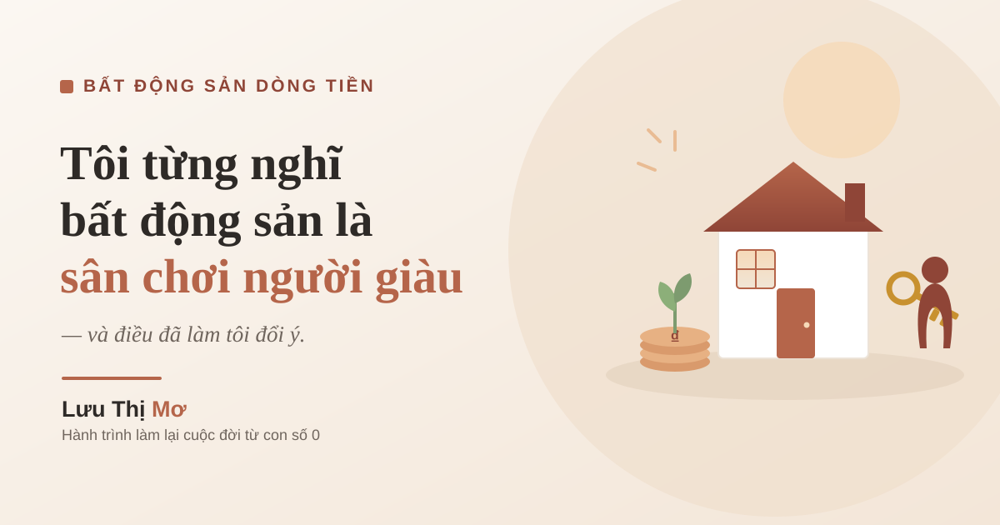

Tôi từng nghĩ bất động sản là sân chơi của người giàu — và điều làm tôi đổi ý

Có một niềm tin đã ở trong đầu tôi suốt nhiều năm, chắc như đóng đinh: "Nhà đất, đầu tư, dòng tiền — mấy chuyện đó là của người giàu. Người như mình, công nhân may, hết tháng hết tiền, thì đứng ngoài thôi."
Tôi không đổi được niềm tin đó bằng một khóa học hay một cuốn sách. Tôi đổi nó bằng một quãng đời. Hôm nay tôi kể bạn nghe, không phải để khoe mình giỏi — tôi chưa giỏi — mà vì tôi tin rất nhiều phụ nữ đang bị đúng niềm tin đó khóa chân, như tôi ngày xưa.
Cái vòng lặp làm tôi tin mình "không tới lượt"
Tôi quê Hiệp Hòa, Bắc Giang, sinh năm 1991. Không có công việc ổn định, tôi xin vào làm công nhân một công ty may. Những ngày đầu ấy, đời tôi gói gọn trong một vòng tròn: sáng đi làm, tối về nhà. Hôm sau lại y hệt. Tiếng máy may chạy rè rè cả ngày, lưng mỏi rã, và trong đầu là một câu tôi không dám nói ra: "Chắc đời mình mãi vậy."
Khi bạn sống trong cái vòng đó đủ lâu, bạn không chỉ thiếu tiền. Bạn thiếu cả niềm tin rằng mình có quyền mơ tới những thứ lớn hơn. Nghe ai nói tới đầu tư, tới tài sản, tới dòng tiền, phản xạ đầu tiên của tôi là gạt đi: "thôi, cái đó không phải cho mình."
Chính cái phản xạ gạt đi đó — chứ không phải cái ví mỏng — mới là thứ giữ tôi ở nguyên chỗ cũ lâu nhất.
Khoảnh khắc một video làm tôi bừng tỉnh
Bước ngoặt tới vào một buổi tối bình thường, khi tôi tình cờ xem được một video phát triển bản thân. Tôi không nhớ hết từng lời, nhưng tôi nhớ cảm giác: như có ai đó bật đèn trong một căn phòng mà tôi đã quen sống trong tối.
Tôi nhận ra thứ giam mình không phải là hoàn cảnh. Là cách tôi nghĩ về hoàn cảnh. Người ta thoát nghèo không phải vì tự nhiên có tiền, mà vì trước hết họ tin rằng mình có thể học được cách xây tài sản, rồi mới đi học thật.
Từ tối đó, tôi tìm cách đăng ký học để phát triển bản thân và tư duy. Và cũng chính trên hành trình đó, tôi có cơ duyên biết tới bất động sản — không phải như một sân chơi xa hoa, mà như một con đường để người bình thường xây dòng tiền cho mình.
Điều làm tôi đổi ý: hiểu ra "bất động sản" không chỉ có một cửa
Cái làm tan niềm tin cũ trong tôi là khi tôi hiểu ra: tôi đã hình dung sai về bất động sản suốt bao năm.
Trong đầu tôi, "mua bất động sản" chỉ có một nghĩa: có tiền tỉ, mua đứt một căn nhà. Đúng là cửa đó thì tôi đứng ngoài thật.
Nhưng hóa ra còn những cửa khác nhỏ hơn, hẹp hơn, dành cho người ít vốn — như hình thức thuê rồi cho thuê lại, nơi bạn không cần sở hữu nhà mà vẫn có thể tạo dòng tiền (tôi kể kỹ trong bài bất động sản dòng tiền là gì cho người ít vốn). Khi tôi thấy có một cửa vừa với người như mình, niềm tin "không tới lượt" của tôi lung lay.
Tôi nhận ra: tôi đã tự đóng cửa cả căn nhà chỉ vì thấy cái cửa chính quá cao, mà quên rằng còn có cửa nhỏ bên hông.
Đổi niềm tin không phải là ảo tưởng — nó đi kèm sự tỉnh táo
Tôi muốn nói cho thật rõ, vì đây là chuyện tiền bạc và tôi không muốn kéo bạn từ thái cực này sang thái cực khác.
Đổi niềm tin không có nghĩa là tôi tin "ai cũng làm giàu được dễ dàng từ bất động sản". Không. Con đường này có rủi ro thật, có người mất tiền thật. Tôi đang học chính là để hiểu rủi ro cho kỹ, chứ không phải để nhắm mắt lao vào.
Đổi niềm tin, với tôi, chỉ là bỏ đi câu "cái này không phải cho mình" và thay bằng câu "cái này mình có thể học được, nếu đi chậm và cẩn thận." Chỉ vậy thôi. Nhưng chỉ vậy thôi đã đủ để tôi bắt đầu bước, thay vì đứng ngoài cả đời.
Nếu bạn muốn hiểu sâu hơn về cái sức mạnh của việc dám thay đổi cách nghĩ, tôi có viết riêng một bài về điều gì khiến một người dám thay đổi cuộc đời.
Gửi người phụ nữ đang nghĩ "không tới lượt mình"
Nếu bạn đang đọc tới đây mà trong lòng vẫn có tiếng nói quen thuộc — "chị nói hay, nhưng em thì khác, em không có gì cả" — thì tôi hiểu tiếng nói đó lắm. Nó từng ở trong tôi mỗi ngày.
Tôi chỉ xin bạn để ý một điều: cái giữ chân bạn lúc này có thể không phải là ít tiền. Rất nhiều người ít tiền vẫn từng bước đi lên. Cái giữ chân bạn, giống như từng giữ chân tôi, thường là niềm tin rằng mình không được phép mơ tới.
Tiền thì có thể tích cóp dần, học dần. Nhưng chừng nào bạn còn tin "không tới lượt mình", thì bạn sẽ không cho phép mình bắt đầu — kể cả khi cánh cửa nhỏ vừa với bạn đang mở.
Tôi không hứa với bạn một cái kết đẹp, vì chính tôi cũng đang trên đường. Nhưng tôi đã đi được từ chỗ "chắc đời mình mãi vậy" tới chỗ dám ngồi học về dòng tiền và viết những dòng này cho bạn. Nếu một cựu công nhân may làm lại từ con số 0 làm được bước đó, thì tôi tin bạn cũng có quyền bước bước đầu tiên của mình.
Và bước đầu tiên rẻ nhất, an toàn nhất, là bước này: cho phép mình tin rằng mình được học. Tối nay, chỉ cần bạn gật đầu với điều đó thôi. Còn nếu bạn đang thấy mình thật sự không còn lựa chọn nào, tôi viết riêng một lá thư cho bạn ở gửi người phụ nữ đang thấy mình không còn lựa chọn.
Về trang chủ